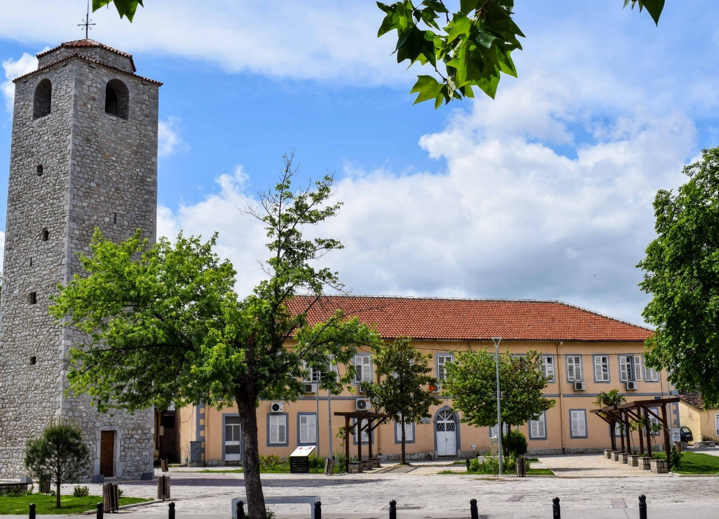

Sahat-kula u Podgorici nalazi se na Trgu Bećir-bega Osmanagića, u naselju Stara Varoš. Visoka je 16 metara i predstavlja jednu od rijetkih podgoričkih građevina koje su preživjele razorna njemačka bombardovanja tokom Drugog svjetskog rata.
Pocetna Izgrađena je 1667. godine kao vojno utvrđenje, a njen graditelj bio je Hadži-paša Osmanagić. Prema istorijskim izvorima, mehanizam sata je naručen iz Italije, a kula je služila kao gradski sat. Unutrašnjost je podijeljena na četiri nivoa, sa drvenim podijumima, dok prirodna svjetlost prodire kroz kamene otvore na zidovima.
U periodu između dva svjetska rata, planirano je postavljanje još tri brojčanika sa kazaljkama kako bi vrijeme bilo vidljivo sa svih strana. Stara varoš tada nije bila potpuno ograđena bedemima – sa istočne strane umjesto zida nalazio se šanac obzidan kamenom, širok osam i dubok tri metra. Zbog otvorenosti prema brdskom zaleđu i čestih sukoba, Sahat-kula je korišćena i kao osmatračnica, a prostor oko nje bio je važna tačka odakle se odbrana grada. U neposrednoj blizini nalazila Zetska kapija – najveća i najfrekventnija od četiri ulaza u grad.
Oko 1890. godine, nakon oslobođenja Podgorice od Osmanske vlasti, na vrh kule postavljen je krst, koji je više od jednog vijeka stajao kao simbol promjene epohe. Tokom rekonstrukcije iz 2017. godine, koju je finansirala turska organizacija “Tika”, krst je uklonjen, što je izazvalo burne reakcije građana i javni zahtjev za njegovim vraćanjem.
Danas Sahat-kula predstavlja važan istorijski i kulturni simbol Podgorice i Crne Gore. Temeljno je renovirana u januaru 2012. godine, kada je ugrađen novi digitalni mehanizam proizveden u Francuskoj, dok je spoljašnji izgled objekta sačuvan. Od tada, sat ponovo precizno pokazuje vrijeme, nastavljajući svoju višestoljetnu funkciju u savremenom kontekstu.
U vremenu kada beton i višespratnice neumoljivo preoblikuju lice savremenih gradova, Stara Varoš u Podgorici ostaje postojan svjedok prošlosti i čuvar autentičnog duha nekadašnjeg Titograda, piše Anadolu Agency (AA).
Smještena tik uz sam centar grada, na obali rijeke Ribnice, Stara Varoš uspjela je da sačuva svoju prepoznatljivu arhitekturu, gotovo nepromijenjenu decenijama – pa čak i vijekovima. Uličice popločane kamenom, niske kuće sa orijentalnim detaljima i mir koji odudara od urbanog tempa savremene Podgorice, čine ovu gradsku cjelinu posebnom i dragocjenom.
Za mnoge Podgoričane, posebno one starije generacije, Stara Varoš nije samo kvart – ona je srce grada, simbol njegovog identiteta i zaboravljenog vremena u kojem se živjelo sporije, tiše i bliže.